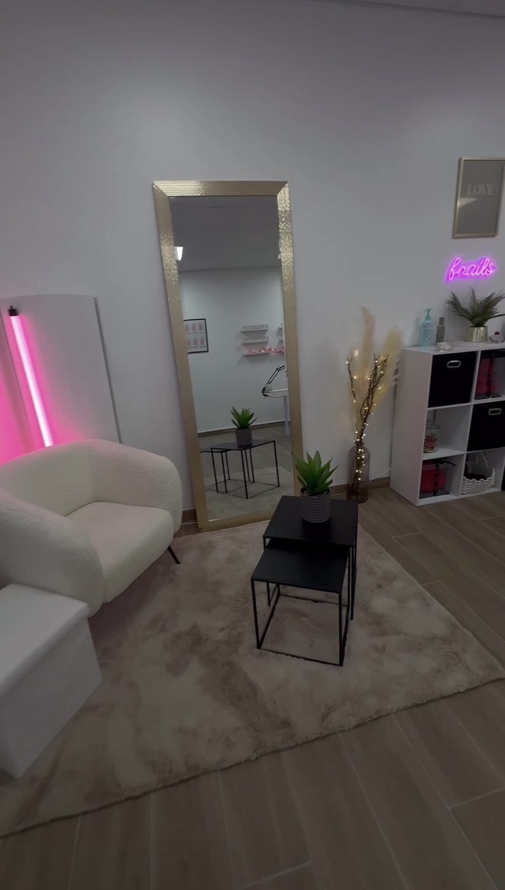
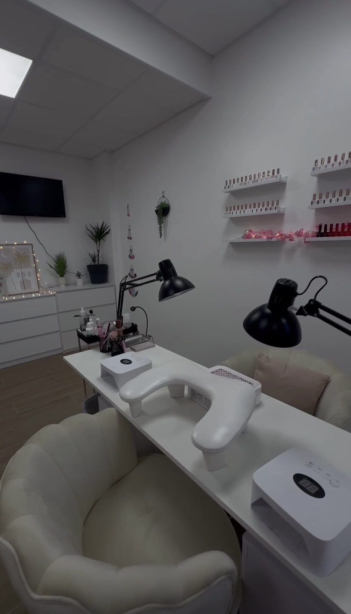

La passion des ongles bien faits
Prothésiste ongulaire à Châteauroux, je vous accueille sur rendez-vous pour prendre soin de vos mains et de vos pieds, avec attention et précision.


Bienvenue chez Fnails.chtrx
Fnails.chtrx, c'est une onglerie installée à Châteauroux, portée par une prothésiste ongulaire passionnée par son métier. Pose gel, pose américaine, gainage, nail art personnalisé et soin des pieds : chaque prestation est réalisée avec soin, dans le respect de la santé de l'ongle.
L'objectif est simple : vous offrir un moment de détente et un résultat qui vous plaît vraiment, que vous recherchiez une pose sobre au quotidien ou une création plus travaillée pour une occasion particulière.
Le travail se suit au quotidien sur Instagram et TikTok, où retrouver les dernières réalisations avant même qu'elles n'arrivent sur ce site.
Une approche soignée
Hygiène rigoureuse
Matériel désinfecté et protocoles d'hygiène respectés à chaque rendez-vous.
Écoute & conseil
Un échange avant chaque prestation pour choisir la pose la plus adaptée.
Créativité
Nail art personnalisé, pour des ongles uniques à chaque rendez-vous.
Prêt·e à réserver ?
Choisissez votre créneau en ligne, en quelques clics.